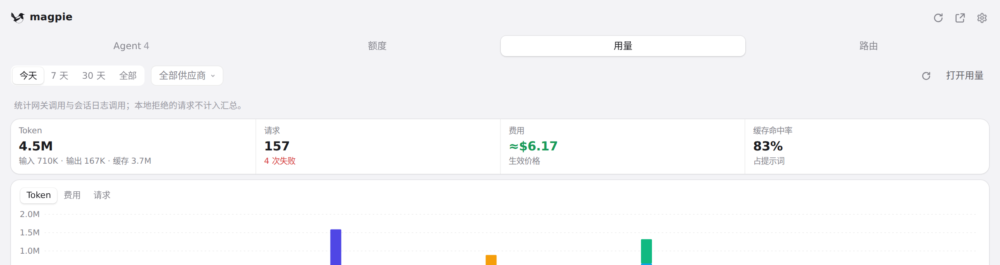
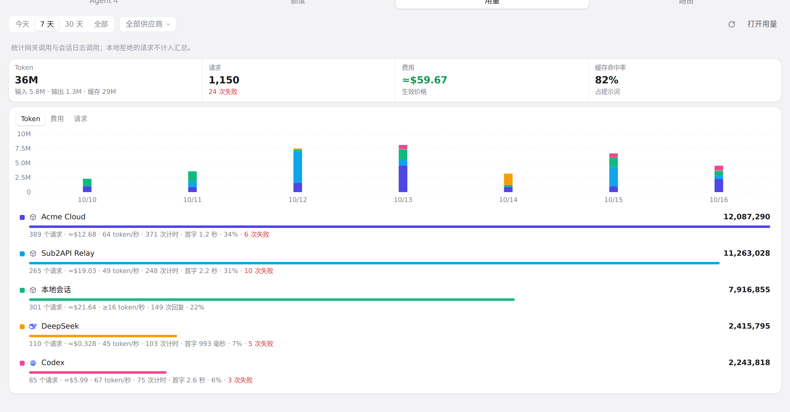
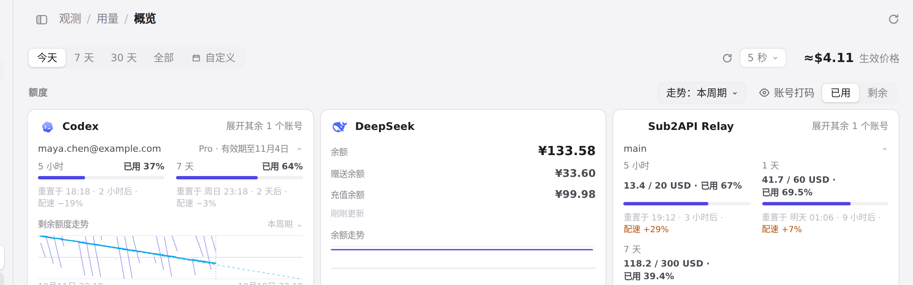
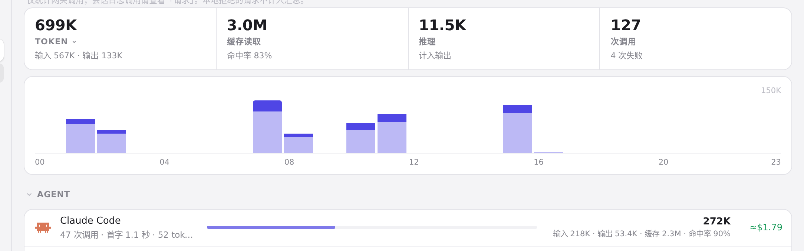
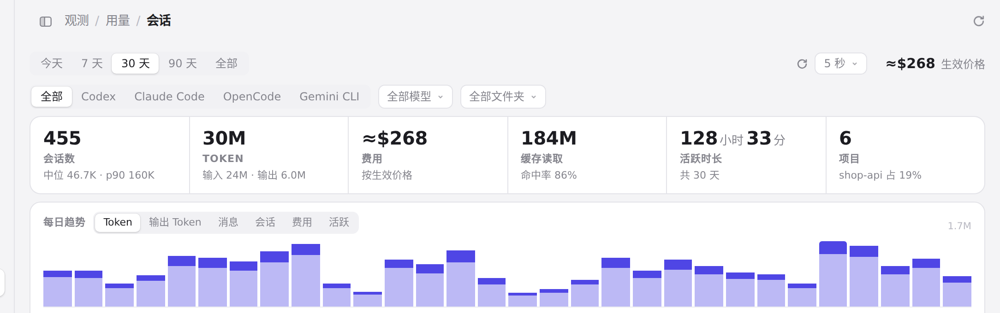
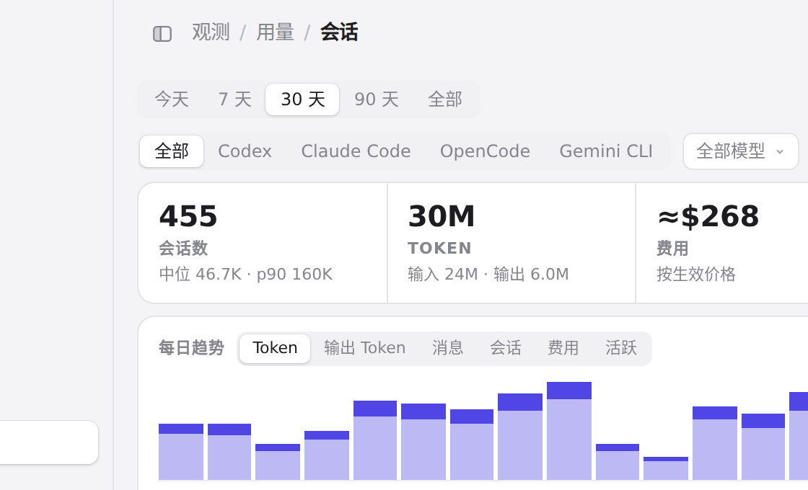

#978 界面预览
commit 6dfd48c · 回到 PR · 这次改动让窄的原生窗口（body.window:not(.web)）里用量页的 KPI 小字换行、六项统计在容器 961–1100px 时改排三列，并让图表横轴日期在原生窗口里也会因与相邻标签碰撞而隐藏（含字体就绪后再量一次），同时把托盘面板「用量」的周期按钮改为跨重绘复用，避免回答重绘吞掉点击或让高亮回跳。
红线是鼠标走过的轨迹，红色圆环是一次点击；底部文字是这一步在做什么。空格暂停，← → 逐段查看。

托盘面板的用量周期按钮 · 面板「用量」里的周期按钮

托盘面板的用量周期按钮 · 面板「用量」的周期按钮与总量

用量页的头部与图表日期 · 用量页顶部：周期、刷新与总额

用量页的头部与图表日期 · 用量概览的柱状图与横轴日期标签

会话页的六项统计与 Agent 标签条 · 会话页顶部的六项统计

会话页的六项统计与 Agent 标签条 · 会话页的 Agent 标签条